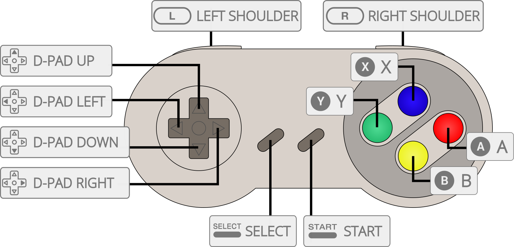

Standalone port of Mednafen bSNES to libretro, itself a old fork of bsnes 0.59.
This core exists as a side effect of porting/forking mednafen for its other cores in the past. There's no reason to use this core now that there's other more compatible and faster SNES cores.
The Beetle bsnes core has been authored by
The Beetle bsnes core is licensed under
A summary of the licenses behind RetroArch and its cores can be found here.
Content that can be loaded by the Beetle bsnes core have the following file extensions:
RetroArch database(s) that are associated with the Beetle bsnes core:
Frontend-level settings or features that the Beetle bsnes core respects.
| Feature | Supported |
|---|---|
| Restart | ✔ |
| Screenshots | ✔ |
| Saves | ✔ |
| States | ✔ |
| Rewind | ✔ |
| Netplay | ✔ |
| Core Options | ✕ |
| RetroAchievements | ✕ |
| RetroArch Cheats | ✕ |
| Native Cheats | ✕ |
| Controls | ✔ |
| Remapping | ✕ |
| Multi-Mouse | ✕ |
| Rumble | ✕ |
| Sensors | ✕ |
| Camera | ✕ |
| Location | ✕ |
| Subsystem | ✕ |
| Softpatching | ✕ |
| Disk Control | ✕ |
| Username | ✕ |
| Language | ✕ |
| Crop Overscan | ✔ |
| LEDs | ✕ |
The Beetle bsnes core's internal core name is 'Mednafen bSNES'
The Beetle bsnes core saves/loads to/from these directories.
Frontend's Save directory
Frontend's State directory
The Beetle bsnes core supports the following device type(s) in the controls menu, bolded device types are the default for the specified user(s):

| RetroPad Inputs | Beetle bsnes Inputs |
|---|---|
|
B |
|
Y |
|
Select |
|
Start |
|
D-Pad Up |
|
D-Pad Down |
|
D-Pad Left |
|
D-Pad Right |
|
A |
|
X |
|
L |
|
R |